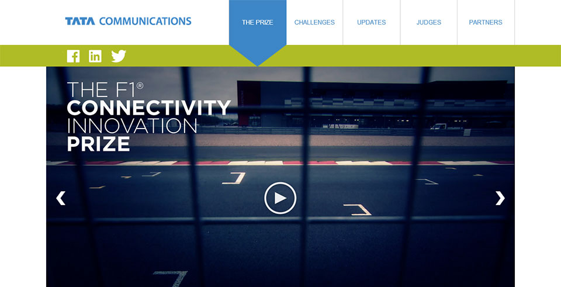
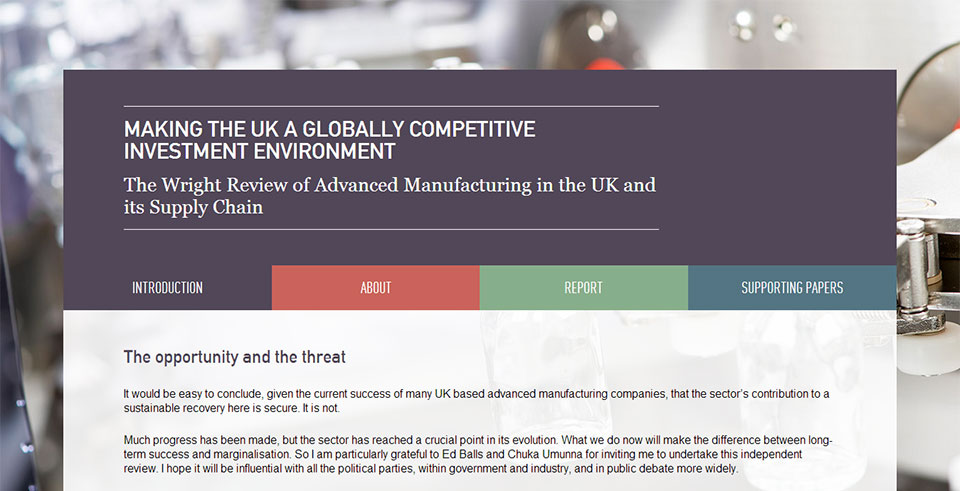
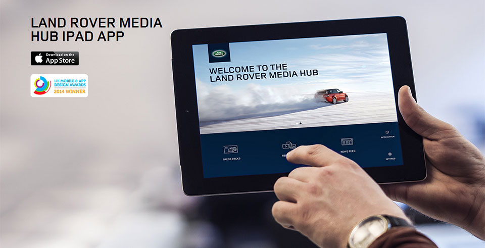
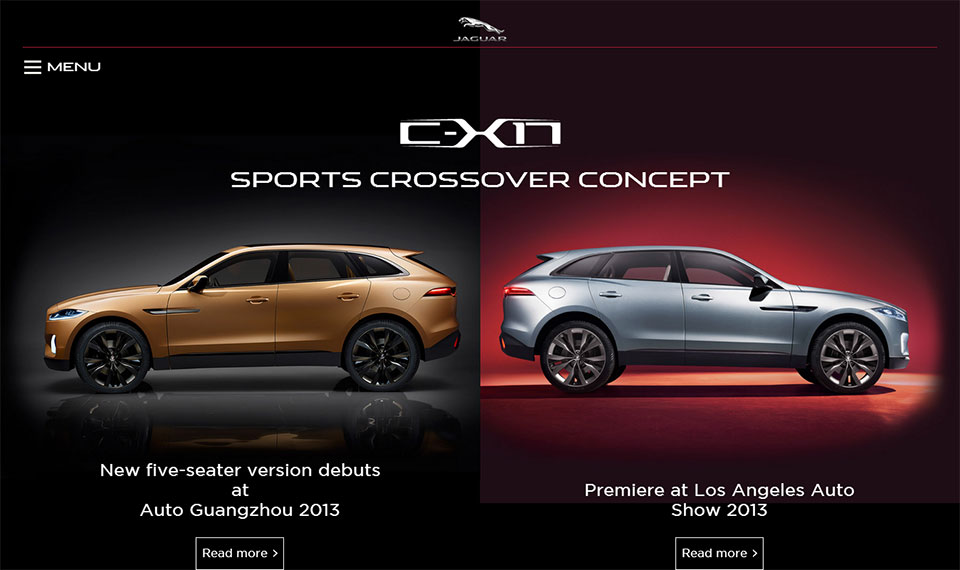
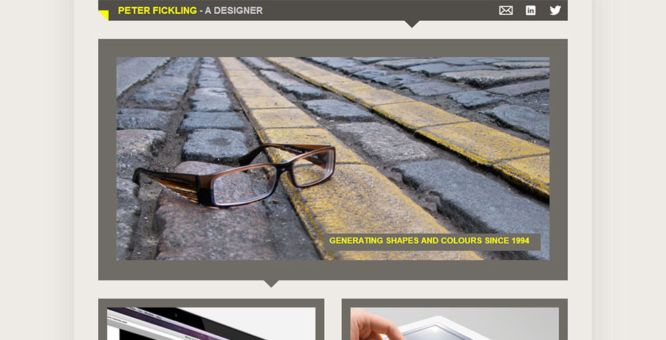
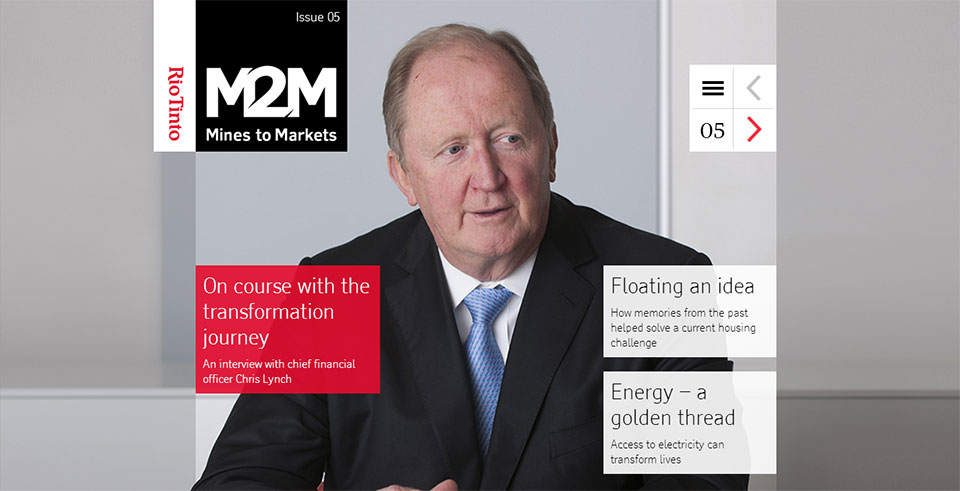
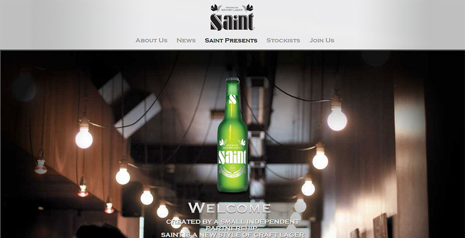

Dan Hems Web Developer
Focusing on the front end, writing clean, semantic markup and well-structured styles. Giving too much thought to naming-convention, and finding joy in geeky things that make development easier. Overly-specific CSS selectors make me sad.
Excited by JS app frameworks and advanced workflow tools. Generating documentation from commented code gives me the warm-and-fuzzies. Using the terminal and bash every chance I get.
It's hard to imagine building without Git.
Projects
-
Pong (playable)

This is my own rendition of the classic game, built with JS and the DOM. I wanted to try something new and challenging, and found inspiration from some live-coding talks I watched online, so I decided to give this a shot. The game uses JS only (no frameworks or libraries) for ball and paddle movement, and collision detection.
It's more a proof-of-concept than a finished product, but something I continue to be proud of.
I am looking to expand on this in the near future and build something more complicated with canvas.
-
The F1 Connectivity Innovation Prize
Website for The Formula 1 Connectivity Innovation Prize, a competition currently being run by Tata Communications, the official connectivity provider for Formula 1. The competition calls on members of the public to find new and innovative ways of presenting Tata's essential race data by way of three unique technical challenges.
This project saw my first outing with the MEAN stack (Mongo DB, Angular, Express and Node), and has been a great learning experience for me in using these exciting new tools. I tackled many new challenges in building this site, many of which opened doors to new techniques and practises that I now use as standard.
-
The Wright Report
Microsite for the Wright Report, a review of advanced manufacturing in the UK. This site provides an introduction for the report, information about the author, and download links for the report as either low or hi-res PDF. The report was authored by Jaguar Land Rover's Executive Director Mike Wright.
-
Land Rover Media Hub
Promotional microsite for the launch of the award-winning Land Rover Media Hub iPad app. This is a single-page site that provides information about the features and capabilities of the app, and features images of its interface and usage.
-
Jaguar C-X17
Microsite for the launch of the Jaguar C-X17 concept car. I took over this project from its original developer, and carried out additional work ahead of the Los Angeles Auto Show, and Auto Guangzhou in 2013. The site features rich images, video content, and technical information for promotion to the press and enthusiasts.
The Susy grid system was used to build the layouts.
-
Peter Fickling - A Designer
Portfolio website for Peter Fickling, a graphic designer and former colleague of mine. He needed an online presence while he interviewed for freelance work. He provided the design which I then built as a reponsive website over a few weekends.
-
Mines to markets
Magazine-oriented website for the Rio Tinto mining corporation, powered by Drupal. Aimed at stakeholders and shareholders, this magazine is released quartely with human-focused articles revolving around the work Rio tinto does with communities, and its dedication to sustainable energy.
Website is fully responsive, designed to have a great UX across devices. Great care was taken to emphasize the flow of articles and content. Each issue is clearly defined for the user, and a page-turner-like experience is provided for the user to read issues from cover to cover.
The magazine is now on its 5th issue, and continues to grow with new content and features.
-
Enjoy Saint
Promotional website for Saint lager, featuring the story behind it, an index of stockists and a blog for social events and interest-stories for British Craft.